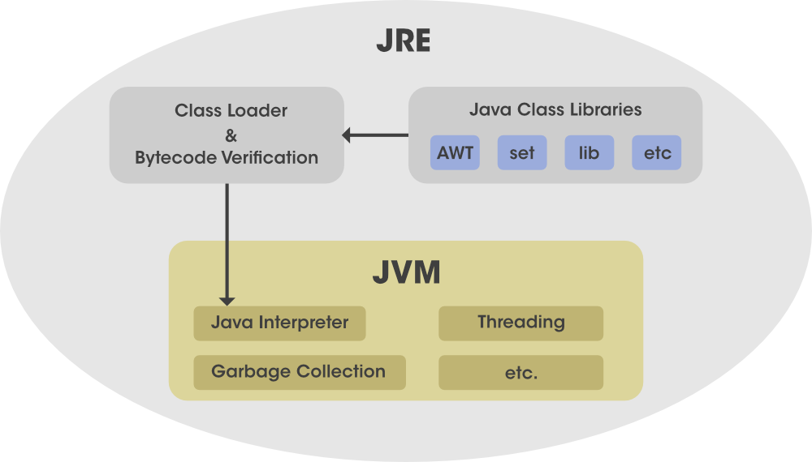

What is JRE?
Java Run-time EnvironmentJava Run-time Environment (JRE) is the part of the Java Development Kit (JDK). It is a freely available software distribution which has Java Class Library, specific tools, and a stand-alone JVM. It is the most common environment available on devices to run java programs. The source Java code gets compiled and converted to Java bytecode. If you wish to run this bytecode on any platform, you require JRE. The JRE loads classes, verify access to memory, and retrieves the system resources. JRE acts as a layer on the top of the operating system. 
What does JRE consist of?
JRE consists of the following components:
- Deployment technologies such as deployment, Java plug-in, and Java Web Start.
- User interface toolkits, including Abstract Window Toolkit (AWT), Swing, Java 2D, Accessibility, Image I/O, Print Service, Sound, drag, and drop (DnD) and input methods.
- Integration libraries including Interface Definition Language (IDL), Java Database Connectivity (JDBC), Java Naming and Directory Interface (JNDI), Remote Method Invocation (RMI), Remote Method Invocation Over Internet Inter-Orb Protocol (RMI-IIOP) and scripting.
- Other base libraries, including international support, input/output (I/O), extension mechanism, Beans, Java Management Extensions (JMX), Java Native Interface (JNI), Math, Networking, Override Mechanism, Security, Serialization and Java for XML Processing (XML JAXP).
- Lang and util base libraries, including lang and util, zip, Java Archive (JAR), instrument, reflection, Collections, Concurrency Utilities, management, versioning, Logging, Preferences API, Ref Objects and Regular Expressions.
- Java Virtual Machine (JVM), which comprise of Server Virtual Machine and Java HotSpot Client.
What is JDK?
Java Development Kit
The Java Development Kit (JDK) is a cross-platformed software development environment that offers a
collection of tools and libraries necessary for developing Java-based software applications and applets.
It is a core package used in Java, along with the JVM (Java Virtual Machine) and the JRE (Java Runtime
Environment).
The Java Development Kit is an implementation of one of the Java Platform:
- Standard Edition Java Platform
- Enterprise Edition Java Platform
- Micro Edition Java Platform
Some popular JDKs are -
- Oracle JDK: the most popular JDK and the main distributor of Java11
- OpenJDK: Ready for use: JDK 15, JDK 14, and JMC
- Azul Systems: based Zulu brand for Linux, Windows, Mac OS X
- IBM J9 JDK: for AIX, Linux, Windows, and many other OS
Contents of JDK
The JDK has a private Java Virtual Machine (JVM) and a few other resources necessary for the development of a Java Application. JDK contains:
- Java Runtime Environment (JRE)
- An interpreter/loader (Java)
- A compiler (javac)
- An archiver (jar) and many more
The Java Runtime Environment in JDK is usually called Private Runtime because it is separated from the regular JRE and has extra contents. The Private Runtime in JDK contains a JVM and all the class libraries present in the production environment, as well as additional libraries useful to developers, e.g, internationalization libraries and the IDL libraries.